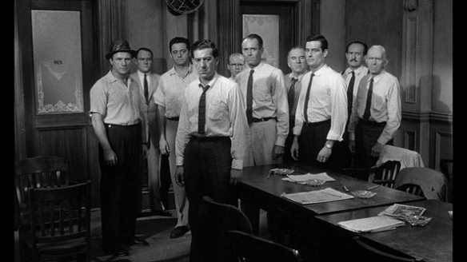

12 Angry Men
My Review
This film centers on a jury of 12 men who must decide the verdict in the case of an 18-year-old defendant. After the evidence is presented, the jurors are sequestered in a room to deliberate the young man’s fate. If found guilty, he will be sentenced to death by the electric chair.
When the initial vote is taken, eleven jurors vote guilty. Only one, Juror #8, who we later learn is named Mr. Davis, votes not guilty.
The entirety of the film unfolds within the confines of this single room. Slowly but surely, Mr. Davis challenges the others’ certainty, forcing them to confront their own biases and re-examine the evidence. He methodically convinces them that there is reasonable doubt about the young man’s guilt.

The atmosphere of conflict is perfectly portrayed, the acting is phenomenal, and the conclusion is immensely satisfying. Despite what might seem like a static premise, the movie is never boring or tedious.
Each man in the room represents a different human flaw and prejudice. The film explores themes of childhood trauma, racism, and the eagerness of some to condemn a young man without a second thought. It handles these complex social issues with a depth and thoughtfulness that is often missing in contemporary cinema. “12 Angry Men” provides profound insight into our inner biases, demonstrating that thoughtful commentary on social injustice existed in film long before the modern era.